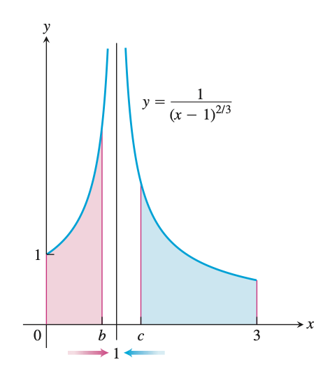

周次: 8 备注: Attendance check 日期: April 13, 2022 节次: 1
In this lecture, we consider integrals when the domain of integration is infinite, or the range of the integrand is infinite. Such cases are not Riemann integrable, therefore, they are called improper integrals. We would like to manage the integrations for these cases, via some limit procedure.
Outline
- Improper Integrals of Type I
- Improper Integrals of Type II
- The Convergence Tests
Preliminary Examples
Example (a). An integral defined on an infinite domain
$$ \int_1^{\infty}{\ln(x)\over x^2}dx, $$ is integrated on $[1,+\infty)$.

Example (b). The range of the integrand is infinite
$$ \int_0^1 \dfrac{1}{\sqrt{x}}dx $$ is integrated on $[0,1]$, where the integrand is unbounded.
Infinite Limits of Integration
Type I Improper Integrals
Definition. Integrals with infinite limits of integration, i.e. $$ \int_a^{\infty}f(x) dx,\quad\int_{-\infty}^b f(x)dx,\quad \int_{-\infty}^\infty f(x)dx $$ are improper integrals of Type I.
NOTE. The integrand $f(x)$ is considered integrable on every bounded sub-interval.
➡️ If $f(x)$ is continuous on $[a,\infty)$ , then the improper integral is defined by $$ \int_a^\infty f(x) dx := \lim_{b\to+\infty}\int_a^b f(x)dx. $$

- If the limit exists, we say that the improper integral converges and that the limit is the value of the improper integral.
- If the limit fails to exist, the improper integral diverges.
Example. The region lies under the curve $y=e^{-x/2}$ in the first quadrant.

➡️ If $f(x)$ is continuous on $(-\infty,b]$, then the improper integral is given by
$$ \int_{\infty}^b f(x) dx := \lim_{a\to-\infty}\int_a^b f(x)dx. $$
- If the limit exists, we say that the improper integral converges and that the limit is the value of the improper integral.
- If the limit fails to exist, the improper integral diverges.
➡️ If $f(x)$ is continous on $(-\infty,+\infty)$, then
$$ \int_{-\infty}^\infty f(x)dx := \int_{-\infty}^c f(x)dx + \int_c^\infty f(x)d x $$
where $c$ is any real number.
- If BOTH the limits exist, we say that the improper integral converges and that the sum of limits is the value of the improper integral.
- If ANY of the limits fails to exist, the improper integral diverges.
Note It can be shown that the choices of $c$ is unimportant. We can evaluate or determine the convergence or divergence of $\int_{-\infty}^\infty f(x) dx$ with any convenient choice.
Example 1. Evaluating an Improper Integral on $[1,+\infty)$
Find the area under the curve $y=\ln(x)/x^2$ from $x=1$ to $x=\infty$, is it finite? If so, what is it?

Example 2. Evaluating an Integral on $(-\infty,+\infty)$
Evaluate
$$ \int_{-\infty}^\infty \dfrac{dx}{1+x^2}. $$
The Integral $\int_{a}^\infty \frac{1}{x^p} dx$ ($a>0$)
Example 3. Determining Convergence
For what values of $p$ does the integral $\int_1^\infty\frac{1}{x^p}dx$ converge? When it converges, what is its value?
Integrands with Vertical Asymptotes
Another type of improper integral arises when the integrand has a vertical asymptote — an infinite discontinuity — at a limit of integration or at some point between the limits of integration.
Example
Consider the region in the first quadrant that lies under the curve $y=1/\sqrt{x}$ from $x=0$ to $x=1$.

Type II Improper Integrals
Definition. Integrals of functions that becomes infinite at a point within the interval of integration are Improper integrals of Type II .
➡️ If $f(x)$ is continuous on $(a,b]$ and is discontinuous at $a$ then
$$ \int_a^b f(x)dx := \lim_{h\to 0^+}\int_{a+h}^b f(x)dx. $$

- If the limit is finite we say the improper integral converges and that the limit is the value of the improper integral.
- If the limit does not exist, the integral diverges .
➡️ If $f(x)$ is continuous on $[a,b)$ and is discontinuous at $b$, then
$$ \int_a^b f(x)dx :=\lim_{h\to0^+}\int_a^{b-h}f(x)dx. $$
- If the limit is finite we say the improper integral converges and that the limit is the value of the improper integral.
- If the limit does not exist, the integral diverges .
➡️ If $f(x)$ is discontinuous at $c$, where $a<c<b$, and continuous on $[a,c)\cup (c,b]$, then
$$ \int_a^bf(x)dx :=\lim_{h\to0^+}\int_a^{c-h} f(x)dx + \lim_{s\to0^+}\int_{c+s}^b f(x)dx. $$

- If the limits are BOTH finite we say the improper integral converges and that the limit is the value of the improper integral.
- If ANY of the limit does not exist, the integral diverges.
Example 4. A Divergent Improper Integral
Investigate the convergence of
$$ \int_0^1 \dfrac{1}{1-x}dx. $$

Example 5. Vertical Asymptote at an Interior Point
Evaluate
$$ \int_0^3 \dfrac{dx}{(x-1)^{2/3}}dx $$

Example 6. A Convergent Improper integral
Evaluate
$$ \int_2^\infty \dfrac{x+3}{(x-1)(x^2+1)}dx. $$
Example 7. Finding the Volume of an Infinite Solid

The cross-sections of the solid horn in this graph perpendicular to the $x$-axis are circular disks with diameters reaching from the $x$-axis to the curve $y=e^x$, $-\infty<x\le \ln2.$ Find the volume of the horn.
Example 8. An Incorrect Calculation
$$ \int_0^3 \dfrac{dx}{x-1} = \ln |x-1|\bigg]_{0}^3 = \ln 2- \ln 1 = \ln 2. $$
This example illustrates what can go wrong if you mistake an improper integral for an ordinary integral. Whenever you encounter an integral $\int_a^b f(x)dx$ you MUST examine the function $f$ on $[a,b]$ and then decide if the integral is improper. If $f$ is continuous on $[a,b]$, it will be proper, an ordinary integral.
Test for Convergence and Divergence
Sometimes, the integral might be very hard to evaluate directly. A good strategy is trying to determine whether it converges or diverges. Then if it is converges, we can evaluate numerically to get an approximation at least.
The principal tests for convergence of divergence are the Direct Comparison Test and the Limit Comparison Test.
Note The comparison tests only work for non-negative or non-positive functions.
Example 9. Investigating Convergence

Does the integral $\int_1^\infty e^{-x^2}dx$ converge?
Theorem 1. Direct Comparison Test
Let $f$ and $g$ be continuous on $[a,+\infty)$ with $0\le f(x)\le g(x)$ for all $x\ge a$. Then
- $\int_a^\infty f(x)dx$ converges if $\int_a^\infty g(x)dx$ does,
- $\int_a^\infty g(x)dx$ diverges if $\int_a^\infty f(x)dx$ does.
Proof.
Example 10. Using the Direct Comparison Test
$$ (a)\qquad\qquad\qquad \int_1^\infty \dfrac{\sin^2 x}{x^2} dx\quad \text{converges} $$
$$ (b) \qquad\qquad\qquad\int_1^\infty \dfrac{1}{\sqrt{x^2-0.1}}dx\qquad \text{diverges} $$
Theorem 2. Limit Comparison Test
If the positive functions $f$ and $g$ are continuous on $[a,+\infty)$ and if
$$ \lim_{x\to+\infty}\dfrac{f(x)}{g(x)} = L,\qquad 0<L<\infty , $$
then
$$ \int_a^\infty f(x)dx\quad \text{and} \quad \int_a^\infty g(x)dx $$
both converge or both diverge.
Sketch for the proof.
Example 11. Using the Limit Comparison Test
Show that
$$ \int_1^\infty \dfrac{dx}{1+x^2} $$
converges by comparison with $\int_1^\infty \frac{dx}{x^2}$. Find and compare the two integral values.
Example 12. using the Limit Comparison Test
Show that
$$ \int_1^\infty \dfrac{3}{e^x+5}dx $$
converges.